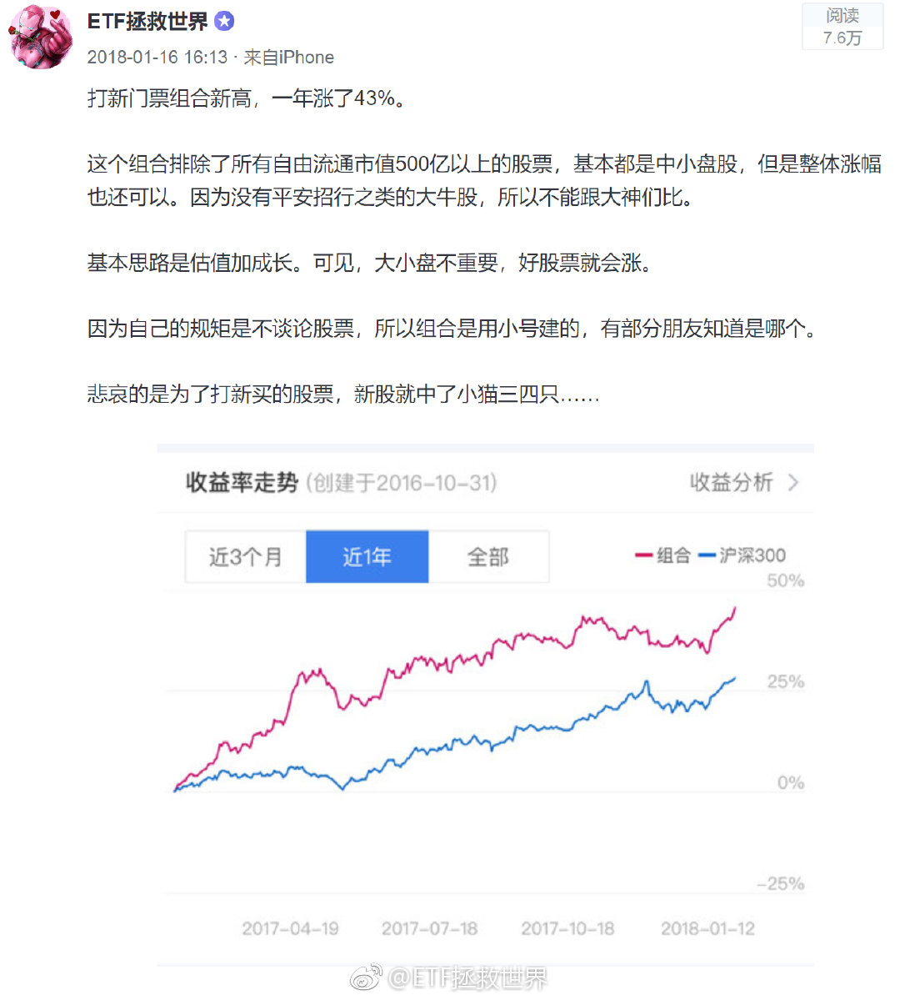

回复@昵称称称昵:今晚回答你。//@昵称称称昵:E大，首先声明我绝不是自己存款里有钱。早几天我把账户盈利拿给爸妈看，我妈给了我三十万要我操作，我该怎么办@ETF拯救世界:当你的利润越来越多，现价逐渐远离你的成本线的时候，你是不是越来越踏实了？如果每次刚刚回本就卖掉，然后继续买入被套，刚回本又卖。总是让价格在成本线周围，那你永远是心惊胆战，患得患失。如果你盈利50%，那么回撤到40%怎么了？你心里不会有太大不舒服。然而如果是盈利5%到亏损5%，就会难过的吃不下饭。所以，一定要想办法让你的利润飞起来。解决的办法只有两个：1、赚钱的时候踏踏实实拿着。2、像股神们一样修改软件里的成本价。
回复@时光匆匆飘逝:跟你说了远离噪音你不信。煎熬都是自找的。//@时光匆匆飘逝:真的是靠着E大的一路按摩才坚持到了现在，在2900点的时候关注的很多大V都开始看空，包括一位在1月5号之后精准抄底的老师也看空，当时真的内心非常煎熬@ETF拯救世界:当你的利润越来越多，现价逐渐远离你的成本线的时候，你是不是越来越踏实了？如果每次刚刚回本就卖掉，然后继续买入被套，刚回本又卖。总是让价格在成本线周围，那你永远是心惊胆战，患得患失。如果你盈利50%，那么回撤到40%怎么了？你心里不会有太大不舒服。然而如果是盈利5%到亏损5%，就会难过的吃不下饭。所以，一定要想办法让你的利润飞起来。解决的办法只有两个：1、赚钱的时候踏踏实实拿着。2、像股神们一样修改软件里的成本价。
当你的利润越来越多，现价逐渐远离你的成本线的时候，你是不是越来越踏实了？如果每次刚刚回本就卖掉，然后继续买入被套，刚回本又卖。总是让价格在成本线周围，那你永远是心惊胆战，患得患失。如果你盈利50%，那么回撤到40%怎么了？你心里不会有太大不舒服。然而如果是盈利5%到亏损5%，就会难过的吃不下饭。所以，一定要想办法让你的利润飞起来。解决的办法只有两个：1、赚钱的时候踏踏实实拿着。2、像股神们一样修改软件里的成本价。
回复@航-YangZ:我不卖它也不敢跌啊 //@航-YangZ:券商又疯了//@ETF拯救世界:500最近逆袭300。风水轮流转，千万别用最近的表现套未来。千万别300好的时候喷500,500好的时候喷300。雪中送炭才有好报。@ETF拯救世界:今天500的涨幅是300的286%，50甚至跌了。但这并不代表什么。500也许还会继续跌。但在这个位置开始，未来5-10年500如果不出现至少一次年化10%甚至15%以上的时刻，我会比较惊讶。
500最近逆袭300。风水轮流转，千万别用最近的表现套未来。千万别300好的时候喷500,500好的时候喷300。雪中送炭才有好报。@ETF拯救世界:今天500的涨幅是300的286%，50甚至跌了。但这并不代表什么。500也许还会继续跌。但在这个位置开始，未来5-10年500如果不出现至少一次年化10%甚至15%以上的时刻，我会比较惊讶。
公开谈论股票的各种风险非常非常大。不仅是波动风险，公司经营风险，甚至包括道德风险。所以我绝对不会公开谈论任何股票。2018年初，看打新门票组合，好像很不错。2017年涨了50%。但你能想到，组合里面有些股票大跌？你能想到，2018年组合收益率也大幅下降？谈论十只股票，有8只表现好已经很NB。但如果有10%的人买了那2只不好的，没买其他的，就会损失惨重。你根本不可能杜绝这种现象。因为有人的钱只够买一两只。我所有言论的出发点，都是希望看我东西的人不要因我赔钱。最好还能赚点。至于自己显得NB不NB，一点都不重要。另外还有太多风险。所以已经6、7年不再谈股票。我在微博上说过几次自己的股票，也都是自嘲说好不容易回本了之类的。只说自己失败的，不说自己成功的。谁还买不到几支翻几倍的股票？没什么了不起，我不会说的……
回复@家里有肥鹅:我从没说过我不买个股。是最近6、7年不再公开谈论个股。谈论股票各种风险太大，没有意义。//@家里有肥鹅:e大，你不是不买个股的么？或者你不是不推荐买个股的么？我们不是玩指数的么？@ETF拯救世界:我持有的一只打新门票股从最低位涨上来130%了。整个下跌过程中我坚持不懈的369补仓。终于回本了。从第一次买到最低点跌了74%……而我第一次买的时候已经从最高点跌了45%了……股票这玩意真神奇啊。（我本人所有打新门票仓位加起来大概十几个点。目前持有40多只。）
我持有的一只打新门票股从最低位涨上来130%了。整个下跌过程中我坚持不懈的369补仓。终于回本了。从第一次买到最低点跌了74%……而我第一次买的时候已经从最高点跌了45%了……股票这玩意真神奇啊。（我本人所有打新门票仓位加起来大概十几个点。目前持有40多只。）
回复@梓溪20180316:拿不住股票是因为你不知道值多少。即使知道值多少也不知道它有没有资金照顾。即使知道有资金照顾也不知道公司会不会突然出问题。拿不住很正常。你没有多大责任。@ETF拯救世界:以前都是你犹犹豫豫患得患失不知道到底该不该给别人抬轿子。一会儿抬起来一会儿放下钱没挣到累个半死。现在一亿多人给你抬轿子，你的感受是______。
回复@做一支有思想的芦苇:赢了会所嫩模，输了你就是嫩模。//@做一支有思想的芦苇:会所嫩模受不了了@ETF拯救世界:以前都是你犹犹豫豫患得患失不知道到底该不该给别人抬轿子。一会儿抬起来一会儿放下钱没挣到累个半死。现在一亿多人给你抬轿子，你的感受是______。
再给个小贴士：牛市行情结束的标志，就是在整个牛市中表现一般的大盘蓝筹股开始暴涨。这是因为资金实在没得炒了，只好去炒大蓝筹。那就意味着要歇菜了。所以你观察一下，如果之前一直没涨的大蓝筹开始涨，那就小心点，盯紧点。
我有一事不明。我最爱做的家务，是把脏了吧唧的锅碗瓢盆放到洗碗机里。放进去的这个过程就很享受。等洗好了，打开洗碗机的门，一股特有的清香掺杂着湿润的热气扑面而来。拿出洗的晶莹剔透的餐具，心中更会感受到极大的快感。我想知道，为什么人类对干净的东西特别喜欢？这里面有什么原理吗。